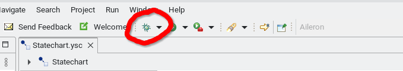
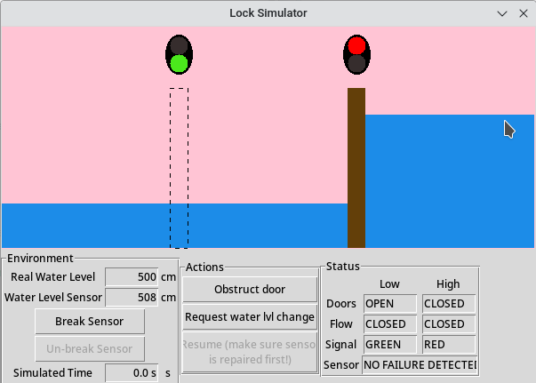

Due Date: Thursday 12 December 2024, before 23:59 (Blackboard's clock).
Team Size: 2 (pair design/programming)! Note that as of the 2017-2018 Academic Year, each International student should team up with "local"
(i.e., whose Bachelor degree was obtained at the University of Antwerp).
Assignment overview:
Solve exercises
Solve assignment, iteratively:
Implement Statechart wrt. requirements
Generate Python code from the Statechart
Test your solution
Solution should pass given scenarios
Implement one extra test sceneario
Write report
Submitting your solution:
Only one member of each team submits a full solution. This must be a ZIP-archive that includes:
Your report (HTML or PDF)
All the files needed to run your solution, including the files from the "starting point" that you were not allowed to edit, and your generated Python code
The other team member must submit a single (plain text or HTML) file containing only the names of both team members. This will allow us to put in grades for both team members in BlackBoard.
The goal of this assignment is to familiarize yourself with Statechart modeling, simulation, testing and code generation. We will use itemis CREATE (formerly called "YAKINDU Statechart Tools").
Getting Started
Note: On the university PCs, itemis CREATE is pre-installed, but missing a license file (follow steps below to get a license).
Clone the StartingPoint git repository into your itemis CREATE workspace, and import it as a project (without copying the files).
Exercises
Before you start working on this assignment, you must solve 5 small exercises. Each exercise shows you a small Statechart model, and asks a question about its behavior. You should include the answers to the exercises in your report.
The exercises can be found in the StartingPoint git repository. In the `exercises' directory, you'll find 5 files (A.ysc, B.ysc, ...). Each of them is a Statechart model that you should open in itemis CREATE. Each model includes a question (in a 'comment' element). You must answer this question, and include your answer in your report.
Example: one of the exercises
Feel free to run the models in itemis CREATE.
There also exists a test script (exercises_test.py) that runs all of the examples with a fixed sequence of input events, and checks if the expected output events occur. To run this script, you must first generate Python code: in itemis right-click on PythonGenerator.sgen, Generate Code Artifacts). Also have a look at the source code of the script. You will test your solution to the assignment in a similar fashion.
To solve the exercises, you must have a good understanding of the precise semantics of itemis CREATE.
The semantics are as follows:
The execution of a Statechart is a sequence of Run-To-Completion (RTC) steps
An RTC-step can only triggered by:
An input event
A timer that elapses (actually, an elapsing timer generates an input event behind the scenes)
An RTC-step is instanteneous: it takes zero time.
In between RTC-steps, the Statechart is idle (it will not change its state), and time may pass.
An RTC-step consists of one or more fair-steps:
During the first fair-step, only the input event that triggered the RTC-step is active.
During a fair-step, orthogonal regions are visited left-to-right, or top-to-bottom:
Within one fair step, every (orthogonal / non-overlapping) region is allowed to fire at most one transition. A region will fire a transition only if it has an enabled transition (wrt. the currently active event, and the transition's guard condition).
When a transition fires: first, all the exit actions of all the exited states are executed (in order: child to parent), then the action of the transition itself, followed by the enter actions of the entered states (in order: parent to child)
In this example, when firing the transition from A to F, first the exit actions of A, B, and C are executed, then the actions of the transition itself, and finally the enter actions of D, E and F (in that order).
Any internal events that are raised (as a result of firing transitions), are added to the internal event (FIFO) queue.
When a fair-step has completed:
if the internal event (FIFO) queue is not empty, then a new fair-step starts. The next event is popped from the queue, and it becomes the new active event.
if the internal event queue is empty, then no more fair-steps are executed, and the RTC-step ends.
Example:
Consider the following Statechart in the figure below.
After initialization, the current states are: OrthogonalState, A, C, E.
Then, the Statechart remains idle until it receives an input event. Suppose at time T=5s, the input event e is received. This triggers the execution of an RTC step.
The RTC step starts with a fair-step, where regions r1, r2 and r3 (in that order) are allowed to fire at most one transition each.
Only r1 has an enabled transition (because event e is active), so only r1 fires.
During the firing of that transition, the internal event f is raised, an appended to the internal event queue.
The fair-step ends, and one more fair-step is executed, because the internal event queue is not empty.
So again, r1, r2 and r3 are allowed to fire at most one transition.
This time, the regions r2 and r3 will fire, because event f is active.
The second fair-step ends, and since the internal event queue is empty, the RTC step also ends.
Even though all transitions fired in a certain order, all of it happened at the same point in (simulated) time.
Now, the Statechart will again remain idle until another input event occurs.
Time
r1
r2
r3
=0
Initialization
enter A
enter C
enter E
>0 && <5s
Idle
=5s
RTC step (input=e)
Fair-step (event=e)
fire (exit A, raise f, enter B)
Fair-step (event=f)
fire (exit C, enter D)
fire (exit E, enter F)
=5s
End of RTC step
Please remember that these precise semantics are specific to itemis CREATE. Other Statechart tools (e.g., STATEMATE, Rhapsody, StateFlow) have different semantics.
Attention!
Once you've completed the exercises, you'll probably understand that if you ensure that your transitions always have an event trigger or after-trigger, you have much more control over when your transition will fire, resulting in a solution that is more likely correct and understandable.
Therefore, ensure that every transition always has either an event trigger, or an after-trigger. Never use the following triggers:
after 0 s (can give strange behavior)
after 1 ms (unless of course you really want to wait 1ms)
always
every X s
(no trigger)
Instead, you should probably use an internal event, or the choice-element. Every time you violate this rule, 5% will be subtracted from your grade on this assignment.
Introduction to Assignment
You will use the Statecharts formalism to model the software controller of a waterway lock. The lock connects two waterway segments with different water levels, and allows watercraft to safely navigate from one segment to another. We will assume that the water level on each side is constant (so there are no tides, like we have on the river Scheldt in Antwerp).
The Kieldrecht lock, in the Port of Antwerp. Currently (2024), the largest lock in the world.
When the lock's water level is equal to the water level on one of its sides, the doors on that side may be safely opened. There is also a traffic light on each side, indicating whether watercraft is allowed to enter the lock. Every lock door also has a valve to let water flow from/to either side, to increase/decrease the water level in the chamber.
Our simulated lock.
In order to detect when altering the water level in the chamber has completed, the chamber is equipped with a water level sensor. However, this sensor is imperfect, and its data is noisy: the data can be understood as the hypothetical "perfect signal" with a small random error added to it. We will have to work around this issue. Furthermore, the sensor is known to break sometimes, outputting nonsense. We will also have to detect when the sensor breaks, and pause all operations until the sensor has been repaired.
Interfaces
Overview of the system and its environment.
The controller is to be implemented as a Statechart, and therefore can only interact with the plant and the environment through discrete input and output events.
Plant interface
Input event
Received when...
waterLvl(integer)
Happens when the water level sensor has a new reading. The integer parameter contains the measured water level, in centimeters.
doorObstructed
Raised when any of the lock doors that are currently open, is obstructed (e.g., because a ship is passing through)
Output event
Effect
openDoors(integer)
Opens the lock doors on one side.
closeDoors(integer)
Closes the lock doors on one side.
openFlow(integer)
Opens the flow valve on one side.
closeFlow(integer)
Closes the flow valve on one side.
greenLight(integer)
Sets the traffic light to green on one side.
redLight(integer)
Sets the traffic light to red on one side.
Note: The integer parameter for the events openDoors, closeDoors, openFlow, closeFlow, greenLight and redLight indicates the side of the lock this action should apply to. Allowed values are 0 (the LOW water side) and 1 (the HIGH water side). In the Statechart interface, the integer constants LOW and HIGH have been declared, so you can (and should) use these, instead of the values 0 and 1.
Environment interface
Input event
Received when...
requestWaterLvlChange
Happens when a water level change is requested, e.g., by a lock operator.
resume
After having detected a broken water level sensor, this event indicates that the water level sensor has been repaired, and normal operation can be resumed.
Output event
Effect
setSensorBroken
Notifies the "environment" that a broken water level sensor has been detected. This event may be used to automatically contact a repair(wo)man.
In the Python GUI, this event enables the "RESUME" button.
setRequestPending(boolean)
Notifies the "environment" that a new "water level change request" is has been accepted (if the boolean parameter is "true"), or that handling the current "water level change request" has completed (if the boolean parameter is "false").
In the Python GUI, this event enables or disables the "Change water level" button.
Behavioral Requirements
Initially, the water level in the lock is LOW. Then, the controller immediately opens the door on the LOW side, and sets its traffic light to green, and waits for a water level change request (requestWaterLvlChange).
When a water level change request happens, the following steps happen, in fixed order:
The light on the side of the open door immediately turns to RED, but the door does not yet close.
After the light has turned to RED, and if the door has been unobstructed for 2 seconds, the door may close. For instance, if the light turns to RED at time T, and at time T+1s the door is obstructed, then the door may close at time T+3s.
Immediately after the door closes, the flow valve on the opposite side it opened, and the water level starts to change.
When the water level sensor reads a level that is within 30 cm of the target level, we know that we are "nearly there", and we leave the flow valve open for one more second, then close it, and immediately open the door at that side, and set the traffic light on that to GREEN.
Note: The reason for detecting if we are "nearly there", is because the data from the water level sensor is noisy. We therefore allow a certain margin of error.
Water level change requests can happen at any point in time. Whenever a water level change request has been received, the controller must notify its environment that this request has been received, with the event "setRequestPending(true)" (see also next section). When a water level change has completed, again the controller must notify its environment with the event "setRequestPending(false)", to indicate that it is ready to take another request.
The water level sensor may break at any time, and this must always be detected. The sensor is considered to have failed when a large enough discontinuity, of more than 1000 cm (positive or negative) in its output occurs, compared to the previous value of the sensor.
When a water level sensor failure is detected, it must be responded to by:
Going immediately to the "emergency mode" (explained below).
Outputting a "setSensorBroken" event (explained in next section).
In the "emergency mode", all lock doors and all flow valves are immediately closed and remain closed, and likewise all traffic lights are set to RED and stay RED. We remain in this mode until someone manually hits the 'RESUME' button. (You can assume that the RESUME button will only be pressed after the water level sensor has been fixed.)
While in the "emergency mode", the controller can still take water level change requests, but they cannot be completed until the "emergency mode" ends.
The RESUME button ends the "emergency mode", resuming normal operations:
If a water level change has been requested (either before or during the emergency mode), which has not been fully completed yet, the lock doors remain shut, and the flow opens on the right side (immediately going to Step 2 of water level change procedure).
Otherwise, the doors open on the side where they were open, the light turns to GREEN on that side, and we wait for a request.
Testing your solution
There are three ways you can test your solution:
Use itemis' debugger. This allows you to see your model execute in real-time. You can observe which states are active, and which transitions are being made. You can manually raise input events and observe raised output events.

itemis testing framework: allows for white-box and black-box automated as-fast-as-possible testing, by writing scripts that raise timed input events, and assertions on expected output events.
We recommend against using the Itemis CREATE testing framework, as explained at the end of this page.
Generate code and run the GUI (runner_gui.py). Here you can see how your model interacts with the "real" system. Input and output events are logged to terminal. You cannot see which states are active, or transitions are made. Upon exiting, a complete trace of all input/output events that occured, will be printed to the terminal.

Screenshot of GUI
Generate code and run the test script (runner_tests.py).
This script will run (the generated code from) your model, but in a non-interactive manner (as opposed to the GUI), and as-fast-as-possible (as opposed to the GUI, which runs in real-time).
The test script contains 3 hard-coded test scenarios, which you are not allowed to alter, and which your model must pass.
Each scenario specifies a sequence of timed input events, which the test runner will give to your model as inputs, and an "expected" sequence of timed output events, which it expects from your model.
A test scenario passes if the model's "actual" sequence of output events matches the expected sequence.
Screenshot of test runner
Further, you must add one extra scenario to this file. This scenario should test a requirement that is not yet covered by the existing tests. Please do not blindly copy an input/output trace that was generated by the GUI. If you do use the GUI to generate a trace, read it, and add comments to it that explain what goes on (similar to the existing scenarios).
Overview of different testing approaches
itemis debugger
Python GUI
Python test runner
white box (e.g., can see what are the current states?)
yes
no
no
interactive or automated?
interactive (real-time)
interactive (real-time)
automated (as-fast-as-possible)
returns
nothing
execution trace
pass or fail (+diff)
Report
You are also required to write a small (HTML or PDF) report.
It must include the following:
The names and student IDs of the team members
The amount of time spent working on the project: Please be honest, this helps us estimate the workload for future assignments.
Your answers to the exercises (A to E).
Your workflow: How did you work together? (pair programming / divided the work / ...) In what order did you implement different features? Encountered any difficulties?
An overview of your final solution (but please do not describe every tiny detail!)
The extra test scenario you added: why this scenario, what requirements does it cover, ...
Include screenshots where appropriate: A picture is worth a thousand words!
What is expected
Your solution needs to be precisely correct: superficially correct behavior when running the generated code with the GUI (e.g., seeing the water levels change) is not enough: the timing-related requirements are exact. Hence the role of the automated tests.
The assignment has been designed specifically to encourage use of as many Statechart features as possible:
composite states
orthogonal states
timed transitions
guard conditions
transition actions
enter/exit actions
internal variables
internal events
(history)
Make sure you understand these features, and use them, where you think they are appropriate.
To give you an indication of the complexity, my own solution consists of 12 states (not counting "regions") and 10 transitions.
Anti-pattern: implementing your own "timer" (don't do this!)
Every year, I see some students implementing some variation of the following:
instead of just creating a transition from A to B labeled after 2s. This serves no purpose whatsoever. It is unnecessarily complex, and the generated code will be less performant. Don't do this!
Why we don't use itemis CREATE's builtin testing framework
If a test case fails, you only see the line of code containing the failed assertion (not even a stack trace, making it difficult to figure out the context of the failure).
No ability to view an input/output trace, which is of didactic importance.
Output events are not instantaneous. Instead, they remain active until the next RTC step occurs (this is wrong).